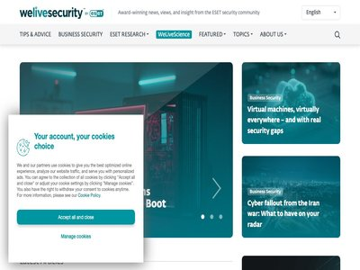
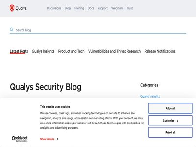

October 31, 2026 · 14 articles

New Android SMS of Death exploit can remotely crash unpatched phones
October 31, 2026
A security researcher has released a proof-of-concept exploit for a recently patched Android vulnerability, dubbed "SMS of Death" and tracked as CVE-2026-58882, that lets attack... (BleepingComputer)
From Beginner to Bug Hunter: Learning Cybersecurity in the AI Era.
October 31, 2026
AI-generated vulnerability reports are overwhelming some bug bounty programs, making it harder for aspiring security researchers to know where to start. TryHackMe explains how b... (BleepingComputer)
Chainalysis discloses data breach from "offensive agentic techniques"
October 31, 2026
Blockchain analytics firm Chainalysis disclosed a data breach after attackers used "offensive agentic techniques" to access internal systems and tools, exposing customer names,... (BleepingComputer)

Appraisal by AI: Model-driven victim prioritization in the VOLTA infostealer
October 31, 2026
The self-deleting VOLTA infostealer steals credentials, sessions, and cryptocurrency wallets. Then, it uses LLMs to profile victims and rank their most valuable assets. (Cisco Talos)

Inside a malicious Claude Code-branded extension and its persistent SSH backdoor
October 31, 2026
Microsoft analyzes a malicious Claude Code-branded extension, its persistent SSH backdoor, and guidance to detect and remediate it. The post Inside a malicious Claude Code-brand... (Microsoft Security Blog)

Syrian Hacker Gets Prison Time in US After Over a Decade on the Run
October 31, 2026
A US court sentenced Syrian hacker Ahmad Umar Agha to 42 months for pro-Assad attacks on media, businesses, and government entities. The post Syrian Hacker Gets Prison Time in U... (SecurityWeek)

Wireshark 5.0.0rc1 Release, (Sat, Oct 31st)
October 31, 2026
Wireshark Release Candidate 5.0.0 was published: soon we can expect a new major version of Wireshark. (SANS ISC)

Attackers Exploit Critical Drupal Commerce Core Vulnerability CVE-2026-118539
October 31, 2026
Drupal warns that attackers are exploiting a critical authorization flaw in Commerce Core, putting vulnerable online stores at risk. Drupal warns that threat actors are exploiti... (Security Affairs)

Attackers Chain Three Ivanti Connect Secure Flaws to Gain Unauthenticated Root Access
October 31, 2026
The U.S. Cybersecurity and Infrastructure Security Agency (CISA) on Friday added two security flaws impacting Ivanti Connect Secure (ICS) to its Known Exploited Vulnerabilities... (The Hacker News)
A Shared ChatGPT Link Could Run Attacker Code in Your Session and Read Private Chats
October 31, 2026
A malicious ChatGPT share link could run an attacker's code in the logged-in session of anyone who opened it, allowing them to read their private conversations, researchers at t... (The Hacker News)

CVE-2026-98432 - Linux kernel IPv4 TCP use-after-free Issue
October 31, 2026
Bulletin ID: 2026-160-AWS Publication Date: 10/30/2026 22:15 PM PDT Description: AWS is aware of CVE-2026-98432, a memory issue in the Linux kernel IPv4 TCP handshake path affec... (AWS Security Bulletins)
Cloudflare Reports 18.2 Million Network-Layer DDoS Attacks in Q3, Up 38%
October 31, 2026
Threat actors are launching about 8,226 network-layer distributed denial-of-service (DDoS) attacks per hour, Cloudflare revealed Thursday. The web infrastructure and security co... (The Hacker News)

31 Fake AI Models on Hugging Face Install GPU Miners and Backdoors: Over 30,000 Downloads
October 31, 2026
Researchers found 31 malicious Hugging Face repositories impersonating legitimate models, with attacks delivered through bundled Python code rather than model weights. Combined... (Joho no Todai)
Linux Kernel TCP Flaw Scores CVSS 9.8 as Anthropic AI Demonstrates Root Access in 53 Minutes
October 31, 2026
CVE-2026-98432, a CVSS 9.8 vulnerability in Linux kernel TCP code, has been confirmed, with an unreleased Anthropic AI model demonstrating unauthenticated root access in 53 minu... (Joho no Todai)
October 30, 2026 · 54 articles

Binance’s $6.3 Billion Hack Puts Developer Machine Security in Focus
October 30, 2026
What Binance’s preliminary findings reveal about developer machine risk, and how StepSecurity helps teams inspect extensions, packages, and AI tooling. (StepSecurity Blog)

This month in security with Tony Anscombe - October 2026 edition
October 30, 2026
The PHP2Shell disclosure and other major cybersecurity news this month brought into relief the need for well-thought-out cyber-readiness plans (ESET WeLiveSecurity)
WordPress RCE Flaw Draws Nearly 63,000 Attack Attempts in Just 24 Hours
October 30, 2026
Threat actors have been observed attempting to exploit a high-severity security flaw in WordPress Core shortly after patches were released. The vulnerability, which does not hav... (The Hacker News)

Hackers steal and publish data on 41,000 Homeland Security workers
October 30, 2026
A hacker group claims it stole data on 41,000 DHS employees, exposing work contact details and internal group memberships. (Malwarebytes Labs)

Binance hit by $6.3 billion theft in what could be the biggest crypto heist on record
October 30, 2026
About $6.3 billion in cryptocurrency was stolen from Binance in what might be the biggest crypto hack in history. “Binance’s initial investigation suggests that the security inc... (Help Net Security)

CrowdStrike Expands Falcon Adversary OverWatch Threat Hunting Across AI and Google Cloud
October 30, 2026
(CrowdStrike Blog)
Build an Intelligence Advantage with Falcon Next-Gen SIEM
October 30, 2026
(CrowdStrike Blog)

“Black October” for AI Developer Platforms
October 30, 2026
A series of agentic attacks on AI Developer Platforms has been leading to LLMJacking at scale. (Wiz Blog)
Yoba Malware Hides a Crypto Miner Behind Legitimate OpenAI and Anthropic Binaries
October 30, 2026
Yoba malware uses fake ChatGPT and Claude apps to sideload malware through signed installers and deploy a cryptocurrency miner. Check Point Research has spent two months trackin... (Security Affairs)

Behind the Scenes of How Operation Blackout Went Down
October 30, 2026
A recent law enforcement operation to dismantle harmful scam centers was a big success. A threat intelligence expert walks us through what happened and why he wants more of the... (Dark Reading)
China-backed threat group used agentic AI pentesting tool to compromise 140 sensitive targets in 11 days
October 30, 2026
Vapor Panda targeted more than 200 organizations spanning at least 14 countries, according to CrowdStrike. The ongoing campaign is remarkably successful and operating at shockin... (CyberScoop)

Friday Squid Blogging: Bigfin Squid Off California Coast
October 30, 2026
Neat video : The sighting, announced September 2, marks the first time anyone has spotted a live bigfin squid, which belongs to the Magnapinna genus, in the northeastern Pacific... (Schneier on Security)

DOJ raises privacy concerns over potential sale of Character.AI chats
October 30, 2026
The DOJ’s Executive Office for U.S. Trustees said a consumer privacy ombudsman is needed to advise the court on how to regulate what data from Character.AI can be sold and under... (The Record)

“Are We Exposed?” What CISOs Need to Know About Their Software Risk
October 30, 2026
Recent events have once again highlighted the need to quickly answer the question, “Are we exposed?” We now face threats to businesses and governments from vulnerabilities and c... (JFrog Security Research)

Crim spent $7K+ on AI services in extortion attacks, then left evidence for all to see
October 30, 2026
n0n-existent security (The Register - Security)
Chinese Hackers Use AI-Powered ARTEX to Target Over 200 Organizations Worldwide
October 30, 2026
Chinese state-sponsored threat actors have been observed using a Go-based artificial intelligence (AI)-powered penetration testing framework called ARTEX in attacks aimed at hig... (The Hacker News)

4 real? Tracking exploitation and patching of eMudhra’s weak keys
October 30, 2026
Four, just four: that’s the key to break into any unpatched connection on the Internet that is using eMudhra certificates. Here’s how we quickly patched Cloudflare, what evidenc... (Cloudflare Blog)

How GitGuardian Secures the Credential Layer: From Discovery to Remediation
October 30, 2026
Credential layer security is more than detection. Follow one credential through the GitGuardian platform, from discovery across repos, CI/CD, laptops, and vaults to owner and ac... (GitGuardian Blog)
California officials confirm grand jury subpoenas as states, civil groups brace to protect elections from federal encroachment
October 30, 2026
Los Angeles County officials told CyberScoop they received multiple grand jury subpoenas investigating alleged election fraud. States and civil groups call it a federal power pl... (CyberScoop)
Florida warns that 4.9 million people had Social Security numbers leaked in financial aid site breach
October 30, 2026
The state’s Department of Education (FLDOE) said on Thursday it became aware of a data breach involving the Florida Student Financial Aid website on October 19. (The Record)

New Framework Puts Ransomware Resilience for AI Systems in Focus
October 30, 2026
RAID-AI aims to help organizations assess their security preparation for ransomware attacks targeting AI systems (Infosecurity Magazine)
TeamViewer Flaw Lets Remote Computers Attack Users Who Connect to Control Them
October 30, 2026
TeamViewer has fixed a flaw that lets the machine being controlled in a remote session attack the computer that connected to control it. In a TeamViewer session, the computer th... (The Hacker News)
Defense contractor pleads guilty to aiding North Korean remote worker scheme
October 30, 2026
The 62-year-old allowed co-conspirators to use his identity and top secret security clearance to apply for almost 100 jobs last year. The scheme’s success rate was limited. The... (CyberScoop)
PHP2Shell Attacks Root Palo Alto Firewalls but Fail Against WordPress
October 30, 2026
Over 22.6 million exposed instances are potentially affected by the critical PHP flaws that have been targeted for over a week. The post PHP2Shell Attacks Root Palo Alto Firewal... (SecurityWeek)

Operationalizing CISA AA26-194A: Automating Cisco Router Security Assessments with Qualys Policy Audit
October 30, 2026
Key Takeaways CISA AA26-194A provides actionable guidance to improve the security of Internet-facing Cisco routers against real-world attack techniques. The advisory focuses on... (Qualys Blog)
CISA Confirms Exploitation of GitLab CVSS 10.0 Vulnerability CVE-2026-97229, Also Requires Compromise Investigations
October 30, 2026
CISA confirmed that GitLab vulnerability CVE-2026-97229 is being exploited in real attacks and added it to the KEV catalog. Compromise investigations are also required. (Joho no Todai)
In Other News: Anthropic Breach Dispute, UEFI Flaw Hits Most Servers, Cloudflare AI Data Leak
October 30, 2026
Noteworthy stories that might have slipped under the radar: Iran eyed in military freezer hacks, Copenhagen University breach, AI-powered malware. The post In Other News: Anthro... (SecurityWeek)
Cloudflare services for private origins is now generally available
October 30, 2026
Public traffic to private origins, with WAF, bot management, caching, and Workers, is now available to every customer with Cloudflare One connectivity. (Cloudflare Blog)
Undead Software Projects Continue to Raise Security Risks
October 30, 2026
A security firm patched a decade-old app to prevent the takeover of millions of machines, highlighting that abandoned domains remain a boon to attackers. (Dark Reading)
SS7 and Diameter Attacks: How Signaling Flaws Expose Your Phone
October 30, 2026
Flaws in SS7 and Diameter signaling protocols can allow attackers to track phone locations, intercept calls and SMS verification codes, and impersonate subscribers without compr... (BleepingComputer)
Passkeys Are Better Than Passwords. But They Are Not Enough.
October 30, 2026
As organizations eliminate passwords, attackers will adapt. Instead of attacking the authenticator directly, they will look for opportunities around it. The post Passkeys Are Be... (SecurityWeek)
Bulletproof Host Virtualine Loses Its Domain to FBI Seizure
October 30, 2026
It allowed customers to host hack-for-hire services, supported ransomware and infostealer operators, and accepted crypto payments. The post Bulletproof Host Virtualine Loses Its... (SecurityWeek)
Assad regime hacker who caused $136 billion market drop sentenced to 42 months
October 30, 2026
A Syrian man who used a hijacked news agency Twitter account to post a fake report of explosions at the White House has been sentenced to 42 months in prison, the US Department... (Help Net Security)
Key Takeaways: AI Threat Readiness Survey Report 2026
October 30, 2026
Key benchmark findings on shadow AI, orchestration risks, and the imperative for an AI-against-AI defensive model. (Wiz Blog)
Shufti ties AI agent actions to verified owners and permissions
October 30, 2026
Shufti launches Know Your Agent (KYA), an AI agent verification solution designed to verify autonomous AI agents acting on behalf of individuals and businesses. Agentic commerce... (Help Net Security)
Bedrock Data routes data exposure fixes to owners and verifies results
October 30, 2026
Bedrock Data has announced AI-assisted remediation, which federates the work of fixing data exposure to the data owners across the enterprise. Bedrock Data discovers who owns ea... (Help Net Security)
Chinese Actor Compromises US Government Network Via Chained PHP2Shell Exploit
October 30, 2026
Dream found that a suspected Chinese-nexus actor gained root access to Palo Alto Network firewall servers to target government organizations (Infosecurity Magazine)
Why Urgent Security Fixes Aren't Fixed. Observe, Prove, Act, Confirm Gets Them Moving
October 30, 2026
The alert is critical. The fix is known. And the ticket sits in a queue for days. Security teams understand the risk, but the people who keep applications available need proof t... (The Hacker News)
ASRock Adds VBIOS Updates for 10 Radeon RX 7000 Models: Security Fix Details Remain Undisclosed
October 30, 2026
ASRock has joined Sapphire and GIGABYTE in releasing security-related VBIOS updates for the Radeon RX 7000 series, covering 10 models. Technical details of the vulnerabilities r... (Joho no Todai)
Microsoft finally fixes VPN issues caused by September updates
October 30, 2026
Microsoft has resolved Always On VPN connection failures triggered after installing the September 2026 Windows 11 security updates. [...] (BleepingComputer)
$2 Million+ Drained From Polymarket Traders in New Supply Chain Attack
October 30, 2026
Malicious code linked to a website monitoring tool was designed to hijack logged-in Polymarket sessions and siphon user funds. The post $2 Million+ Drained From Polymarket Trade... (SecurityWeek)
Unity Issues Advisories for Brotli CVE-2026-111497 and eMudhra: Firebase SDK Requires Rebuilding Apps
October 30, 2026
Two Unity security advisories reveal that Package Manager decompresses Brotli data before verifying signatures, and that the Firebase Unity SDK has a separate certificate store... (Joho no Todai)
Open-weight AI model GLM-5.3 cheated its way to correct answers
October 30, 2026
Irregular evaluated Zhipu AI’s open-weight model GLM-5.3 across 13 offensive cyber scenarios using CyScenarioBench, the company’s framework for measuring an LLM’s ability to pla... (Help Net Security)
TeamViewer Flaw Could Let Malicious Hosts Take Over Support Technicians’ Machines
October 30, 2026
An integer overflow tracked as CVE-2026-111585 could be used to execute arbitrary code on the viewer’s system. The post TeamViewer Flaw Could Let Malicious Hosts Take Over Suppo... (SecurityWeek)
As Russia's Cyberwar Evolves, Belarus Steps Forward
October 30, 2026
The "FrostyNeighbor" advanced persistent threat (APT) launched a destructive attack in Ukraine and is raising concerns about deeper alignment with Russian cyber objectives. (Dark Reading)
Fake IT help desk callers got by on little more than names and email addresses
October 30, 2026
Attackers posing as IT help desk staff contacted employees by phone, email and Microsoft Teams in the third quarter of 2026 and talked them into opening remote access sessions,... (Help Net Security)
What exactly is ISOC? And what does it mean for you?
October 30, 2026
Gartner recently released a new category of assessing security tools: the Integrated Security Operations Center (ISOC). Even though SIEM isn’t going anywhere, a rapidly evolving... (Help Net Security)
Scammers rebuild fake shopping sites within hours of a takedown
October 30, 2026
One retail scam used more than 1,200 look-alike .shop domains sharing a single IP address. The sites reused HTML, JavaScript and payment-page designs intended to harvest card nu... (Help Net Security)
KeyDrift Malware Hides in Cisco SD-WAN Management Appliances to Collect Cryptographic Keys
October 30, 2026
Cisco Talos has detailed KeyDrift, a purpose-built malware suite that infiltrates Cisco Catalyst SD-WAN control systems and collects information related to cryptographic keys. O... (Joho no Todai)
Smart TVs can harbor unpatched security flaws and track what you watch
October 30, 2026
Smart TVs and connected plugs accounted for a large share of recorded security weaknesses in household devices, according to Bitdefender’s 2026 IoT Security Landscape Report. Th... (Help Net Security)
In the year AI re-wrote the infosec rulebook, it’s comforting to know crypto exchanges still have bad security
October 30, 2026
Binance freezes funny money after compromise of engineer’s laptop linked to $6.3 billion of unauthorized trades (The Register - Security)

Risky Bulletin: Belarusian state hackers get on the data-wiping train
October 30, 2026
In other news: Hacker leaks data on 41k DHS employees; Binance hacked for billions; PHP bugs exploited to hack Palo Alto Networks firewalls. (Risky Business News)

php2shell one week later: Why one exploit doesn’t work everywhere
October 30, 2026
php2shell raised fears of mass exploitation. A week of testing by our research team found that working exploits had to be fitted to each target’s exact PHP setup. Systems that s... (Tenable Blog)

Threat Researcher’s Notebook: How Attackers Redirect Crypto Payments
October 30, 2026
This blog discusses the general trend of Clipbanker malware, why they can be successful, what specific samples look like, and how to avoid them. (ReversingLabs Blog)
October 29, 2026 · 52 articles
ThreatsDay: Critical Firewall Flaws, Banking Trojans Rented, Weaponized PDF, Token Theft + 26 More Stories
October 29, 2026
Some attacks take real skill. Others just need someone to leave a door open. This week has both. Exposed passwords, old bugs still getting exploited, and trusted software doing... (The Hacker News)
Tracking AI adoption in North Korean threat actor tradecraft
October 29, 2026
As Microsoft Threat Intelligence continues to track how threat actors operationalize AI to increase the speed and efficiency of attacks, we’ve identified North Korean threat act... (Microsoft Security Blog)
IDC MarketScape names Microsoft a Leader in the 2026 Worldwide Modern Endpoint Security for Enterprises Vendor Assessment
October 29, 2026
IDC has named Microsoft a Leader in the 2026 IDC MarketScape for Worldwide Modern Endpoint Security for Enterprises. The post IDC MarketScape names Microsoft a Leader in the 202... (Microsoft Security Blog)
Webinar: How to Build AI Threat Readiness Into Your Security Operations
October 29, 2026
Security teams have spent years trying to detect threats faster. AI is changing the harder part: how much time defenders have left to act. Advanced AI models can now help attack... (The Hacker News)
Amatera: How the prolific infostealer works and spreads
October 29, 2026
The malware that topped ESET’s infostealer detections in Latin America in the first half of 2026 is an example of how cybercrime has professionalized (ESET WeLiveSecurity)
VAPOR PANDA Uses AI-Driven ARTEX to Scale a Global Espionage Campaign
October 29, 2026
(CrowdStrike Blog)
Leaked DHS employee archive, Icepick, faces challenges to stay online
October 29, 2026
A DHS contractor requested its removal, while a social media site blocked links to it. It was offline for a spell before finding a new home. The post Leaked DHS employee archive... (CyberScoop)
Why CTF Competitions May Be More Important Than Ever
October 29, 2026
As artificial intelligence squeezes early-career learning opportunities, capture-the-flag contests could be one way to help pick up the slack. (Dark Reading)
Google's Gemini 4 Carbon Leads Benchmarks for Finding, Exploiting, and Patching Vulnerabilities
October 29, 2026
Google on Wednesday took the wraps off Gemini 4 Carbon, its latest frontier model with state-of-the-art cybersecurity and long-horizon capabilities. "It shows significant gains... (The Hacker News)
Volt Typhoon Used Silent Train to Hide Zero-Day Attacks
October 29, 2026
Volt Typhoon used disposable relay chains to hide zero-day attacks on critical systems. Lumen linked Silent Train to at least four zero-days. Lumen’s Black Lotus Labs has spent... (Security Affairs)
Shadowy AI Relay Disables OpenAI Codex, Claude Code Sandboxes
October 29, 2026
The enigmatic service is providing popular AI coding tools to mainland China and other regions where OpenAI and Anthropic products are not officially for sale - but with key sec... (Dark Reading)

Reports of SIEM's Death Have Been Greatly Exaggerated
October 29, 2026
SIEM isn't dead. Its bloated pricing model is. Discover why legacy pricing models need to go, how AI fits in, and how to build a smarter, cost-effective security logging strategy. (Huntress Blog)
The Rise of the Threat Operator: How AI Will Redefine Security Operations and Careers
October 29, 2026
AI is beginning to take over much of the work that has traditionally defined the security analyst's job. Investigating alerts, collecting evidence, correlating activity across t... (The Hacker News)
The Internet Does Not Go Down, but a Flaw in One Technology Can Take Many Services Offline
October 29, 2026
Unauthenticated remote code execution vulnerabilities have been found in PHP, which powers roughly 70% of the web, prompting the FBI to recommend taking unpatched sites offline.... (Joho no Todai)
Researchers find bugs in 5 AI developer tools, with OpenAI and Microsoft flaws still unpatched
October 29, 2026
Embedded browsers are at the heart of the problem (The Register - Security)
JAL and ANA Customer Data Accessed Through Amadeus Breach Spanning More Than Three Years
October 29, 2026
JAL and ANA have separately announced evidence that customer data was accessed externally following unauthorized access to their reservation system provider, Amadeus. About 92,0... (Joho no Todai)
Hugging Face malware campaign returns to hijack GPUs for crypto mining
October 29, 2026
A crypto-mining campaign abusing Hugging Face models returned days after takedown, hijacking GPU servers and planting backdoors, with one model downloaded over 28,000 times. Sep... (BleepingComputer)
Japan Airlines suffers third-party data breach exposing passenger info
October 29, 2026
Japan Airlines (JAL) has announced that a data breach at Amadeus's Passenger Service System exposed the data of about 92,000 customers. [...] (BleepingComputer)
Anthropic-Themed Phishing Emails Bypass Top Security Tools
October 29, 2026
Obvious phishing emails with numerous red flags are somehow getting past some of the industry-leading secure email gateway (SEG) products. (Dark Reading)
Rethinking Cybersecurity Awareness in the AI Era
October 29, 2026
This installment of the Reporters' Notebook video series discusses some of the trends and topics from Cybersecurity Awareness Month, from using AI for better training to educati... (Dark Reading)
484,142 Exposed Cloud Buckets Contain 18 Billion Files
October 29, 2026
42 publicly listable cloud buckets containing 18 billion files, including exposed credentials, database dumps and backups. The Ransomnews research team counted 484,142 publicly... (Security Affairs)
Claude Model Builds Exploits Across Major Browsers & OSes
October 29, 2026
An unreleased version of the AI model has found and chained multiple vulnerabilities in Chrome, Safari, Android, Windows, and Linux, Anthropic says. (Dark Reading)

Threat Brief: Critical Vulnerabilities in PHP: CVE-2026-109618, CVE-2026-109619 (Updated October 29)
October 29, 2026
CVE-2026-109618 and CVE-2026-109619 are Critical vulnerabilities in PHP, a scripting language used globally for web servers and CMS systems. The post Threat Brief: Critical Vuln... (Palo Alto Networks Unit 42)
A quiet week in infosec <.<
October 29, 2026
In this edition of the Threat Source newsletter, William explores how PHP has taken over the conversation, Node.js has joined in, but underneath it all, there are still good peo... (Cisco Talos)
When Risk Becomes Personal: What Security Leaders Can Learn From a Cancer Diagnosis
October 29, 2026
Risk managers are trained to spot weak signals, plan for disruption and make hard decisions under uncertainty. But the discipline looks different when the risk is not a system o... (SecurityWeek)

Cloud CISO Perspectives: Introducing new $250,000 tier for Google Cloud VRP (Q&A)
October 29, 2026
Welcome to the second Cloud CISO Perspectives for October 2026. Today, Chris Betz talks with Michael Cote, our vulnerability rewards program lead, about the new tier of our Clou... (Google Cloud Blog)
Threat Modeling With 4 Simple Questions on a White Board
October 29, 2026
A four-question exercise that CISOs can use to create a threat model that promises results, without a big spend. (Dark Reading)
How Secure Are US Elections? Voting Machine Risks and the Growing Threat of AI
October 29, 2026
Unpatched voting machines, unverifiable QR-coded ballots, and AI-driven influence campaigns leave US elections short of secure. The post How Secure Are US Elections? Voting Mach... (SecurityWeek)
NIK C2 Malware Can Use Victims’ OpenAI Keys for AI Queries
October 29, 2026
NIK C2 malware can fall back on victims’ OpenAI API keys to run AI queries (Infosecurity Magazine)
GitHub Octoverse 2026: AI Agents, Citizen Developers, and the New Security Reality
October 29, 2026
GitHub’s Octoverse 2026 counted 34.3 billion commits, and over 40% of pull requests now start with an AI agent. Read to learn what the State of the Octoverse 2026 Report reveals... (GitGuardian Blog)
Cisco Open Sources Quarry to Catch AI Agent Attacks Hidden in Harmless Steps
October 29, 2026
Cisco open sourced Project Quarry, a rule language for detecting AI agent attacks that only emerge across sequences of benign actions. The post Cisco Open Sources Quarry to Catc... (SecurityWeek)

Cohere’s Qwen Story: Looks More Like Model Jaggedness
October 29, 2026
Key findings On October 26, Cohere reported a puzzling incident involving Qwen3.8-Flash-Next, an open-weight model from Alibaba. The task was straightforward: write a detection... (Check Point Research)
3 Ways AI Agents Already Operate in Your Browser
October 29, 2026
AI agents can control authenticated browsers, interact with corporate applications, and access sensitive data while appearing to act as legitimate employees. Keep Aware examines... (BleepingComputer)
IR trends Q3 2026: Actors impersonate IT help desks in vishing attacks as ransomware activity increases
October 29, 2026
Phishing remained the leading initial access technique, while percentage of ransomware and pre-ransomware cases increased. Finance and public administration tied as the top-targ... (Cisco Talos)
Adobe, Veeam, Juniper Networks Patch Critical Vulnerabilities
October 29, 2026
The flaws could lead to arbitrary code execution, authorization bypasses, and privilege escalation. The post Adobe, Veeam, Juniper Networks Patch Critical Vulnerabilities appear... (SecurityWeek)

Integrate Aquasec and Prometheus for Greater Visibility Into Runtime Security Operations
October 29, 2026
TL;DR: Maintaining runtime protection across cloud native environments requires visibility into the health of security controls and the activity they detect. Aquasec protects ru... (Aqua Security Blog)
Exploitation attempts against recently patched Oracle EBS flaw have begun (CVE-2026-101767)
October 29, 2026
Exploitation attempts have started against CVE-2026-101767, a recently patched Oracle E-Business Suite (EBS) flaw. “Our Oracle E-Business Suite decoys recorded exploratory explo... (Help Net Security)
Ubuntu Core Desktop returns as Canonical’s plan for an immutable default desktop
October 29, 2026
Canonical has restarted work on Ubuntu Core Desktop, the immutable and attestable version of Ubuntu that the company says will over time become the default Ubuntu desktop. Jon S... (Help Net Security)
Windows 11 KB5127936 update released with 41 changes and fixes
October 29, 2026
Microsoft released the KB5127936 preview cumulative update for Windows 11 versions 25H2 and 26H2, with 41 changes, including File Explorer and Cloud rebuild improvements. [...] (BleepingComputer)
Attackers turn GitHub issues into supply chain campaign against 61 public repos in less than an hour
October 29, 2026
'The workflow automatically is triggered within a second, and if the workflow is indeed vulnerable, then the attack is executed successfully' (The Register - Security)
26,400 Valid Cloud and AI Credentials Found Exposed in Public Gitee Repositories
October 29, 2026
26,400 credentials that developers left in public code on Gitee, a Chinese code-hosting service, still worked when a researcher tested them. Anyone who copied one from that code... (The Hacker News)
Online Scam Volumes Double to Overtake Phishing
October 29, 2026
Akamai research reveals that scam detections topped six million in Q2 2026 (Infosecurity Magazine)
Have an older iPhone or iPad? Apple has a security update for you
October 29, 2026
Apple has backported a fix for a CoreGraphics flaw reportedly exploited in targeted attacks to the iPhone XS, XS Max and XR, and seventh-generation iPad. (Malwarebytes Labs)
ICO Reprimands Staffordshire Police After Domestic Abuse Breach
October 29, 2026
The UK’s privacy regulator has issued a reprimand to Staffordshire Police following a serious breach of personal information (Infosecurity Magazine)
NIK C2: The new AI-enabled command-and-control framework
October 29, 2026
Cisco Talos observed a new AI-integrated command-and-control (C2) framework in the wild called “NIK C2.” (Cisco Talos)
Election Website Security: 42% of US County Sites Still Lack .gov Domains
October 29, 2026
US election websites show improved security, but weak email protection, non-.gov domains and third-party tracking still expose voters to risks. Millions of Americans will use we... (Security Affairs)
Windows 11 VM Boot Hang Reported With Linux 6.18.58 as KVM SMM Handling Is Investigated
October 29, 2026
A report says a Windows 11 VM with Secure Boot and SMM enabled hung at the UEFI screen after a Fedora 44 KVM host was updated to Linux 6.18.58. KVM maintainers requested further... (Joho no Todai)
MR ROBOT Malware-as-a-Service Targets Indian Bank Customers
October 29, 2026
MR ROBOT Android malware rents banking trojans that steal one-time passwords and card data (Infosecurity Magazine)
Admin dropped the F-bomb in a password to show hackers who was really 1337
October 29, 2026
Cursing in login credentials can help keep the bad guys out, but not when the rest of your security is BS (The Register - Security)
ENGIE Data Breach Exposes Customer Details and Energy Contracts
October 29, 2026
ENGIE says attackers accessed French customers’ contact and energy contract data through a partner sales tool. Banking data was not affected. French multinational energy company... (Security Affairs)
Cyber Vulnerabilities Besiege Italy, Absent Clear Cause
October 29, 2026
Researchers can't quite explain why cyber threats look so different in Italy compared to everywhere else. (Dark Reading)
Qualys CISO on what security teams can do as exploit campaigns grow
October 29, 2026
In this Help Net Security interview, Nathan Smolenski, CISO at Qualys, talks about how security teams can handle the growing volume of AI-discovered vulnerabilities. He explains... (Help Net Security)